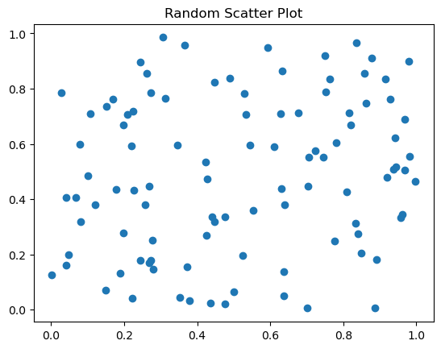
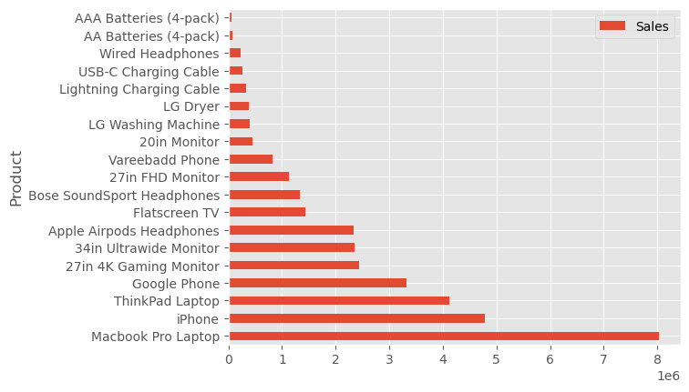
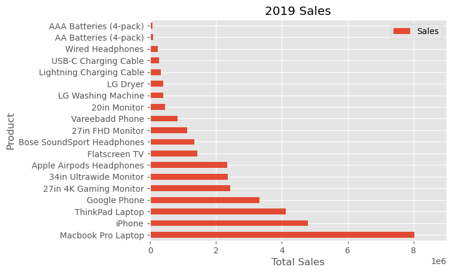
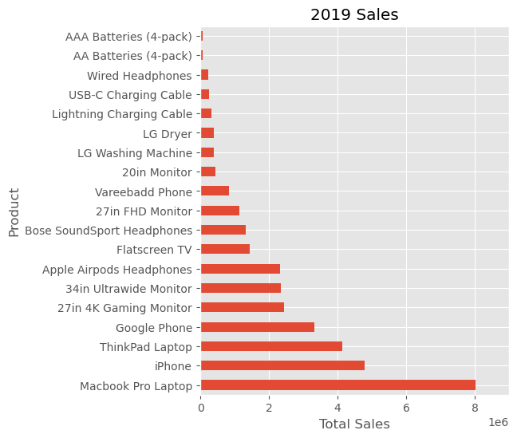
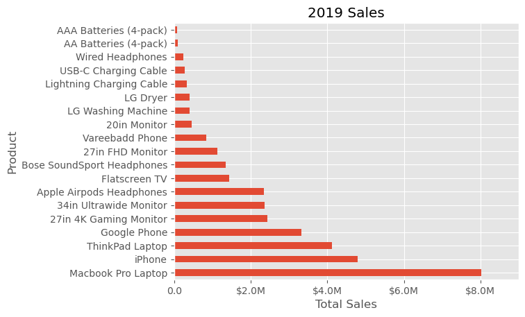
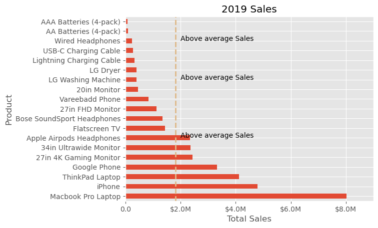
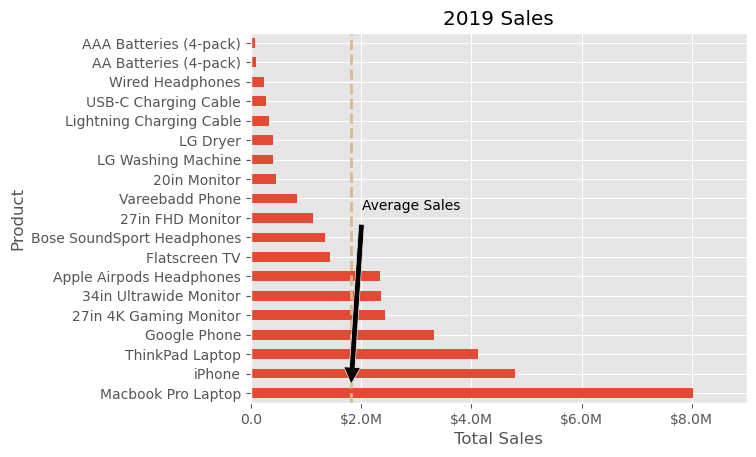
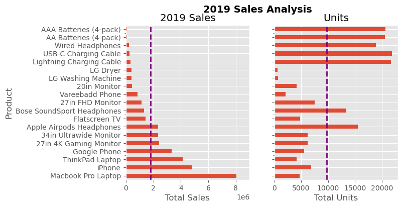

import matplotlib.pyplot as plt
import numpy as npNavigating Matplotlib
Introduction to Matplotlib: A Key Player in Python’s Data Science Toolbox
Matplotlib, often a first encounter for Python enthusiasts diving into data visualization, has evolved into an indispensable tool in the Python data science stack. Initially, its complexity and style choices may have deterred users, but with updates like Matplotlib 2.0, it now offers a blend of power and aesthetics, rivalling R’s ggplot.
Matplotlib’s Dual Interfaces: MATLAB-style vs. Object-Oriented
Matplotlib offers two main interfaces for plotting:
- MATLAB-style Interface: Inspired by MATLAB, this interface is state-based. It’s like using a traditional canvas, where each command alters the state of the canvas (e.g., adding a line, changing colors). It’s straightforward but can get confusing with complex plots.
- Object-Oriented (OO) Interface: This is Python’s way. Here, you deal with objects and their methods. You have more control and clarity, especially for complicated figures. It’s like having blueprints for different parts of your plot, which you can modify independently.
Why Object-Oriented is the Way to Go
The OO approach aligns with Python’s philosophy and provides clarity, especially for complex visualizations. It’s like being a director of a play where you have control over every actor (plot element) rather than just narrating a story.
Let us look at some examples. We will start by explaining a few steps here before we start coding. We will be using made up data for now.
Importing Libraries:
import matplotlib.pyplot as plt import numpy as npmatplotlib.pyplot: A collection of command-style functions that make Matplotlib work like MATLAB. This module is used for plotting graphs. It allows users to create figures, set up plotting areas within figures, plot lines or other graphical elements, add labels and decorations to plots, and more. The pyplot functions operate on the current figure and plotting area, making it easy to generate visualizations quickly.numpy: A fundamental package for scientific computing in Python. It’s used here for numerical operations and random number generation.
Creating a Random Number Generator (RNG):
rng = np.random.default_rng() # Using numpy's random number generatornp.random.default_rng(): This method creates an instance of a random number generator. Thedefault_rng()is a part of NumPy’s new random number generation system that provides a variety of random number generation methods. It’s preferred over older functions likenp.random.rand()ornp.random.randn()for several reasons:- Improved Randomness: It uses a more modern and statistically robust algorithm for random number generation.
- Reproducibility: It offers better reproducibility across different platforms.
- Flexibility: It provides a wider range of random number generation functions and better control over the random state.
Generating Random Data:
x = rng.random(100) y = rng.random(100)rng.random(100): Generates 100 random numbers between 0 and 1. These numbers are used as the x and y coordinates for the scatter plot.
Creating a Scatter Plot:
plt.scatter(x, y) # Adding a scatter plotplt.scatter(x, y): This function creates a scatter plot withxandyas its coordinates. Scatter plots are used to observe relationships between variables.
Adding a Title and Displaying the Plot:
plt.title("Random Scatter Plot") plt.show()plt.title(): Adds a title to the plot.plt.show(): Displays the plot. In a Jupyter notebook, this line is often optional as plots are displayed automatically.
rng = np.random.default_rng() # Using numpy's random number generator
x = rng.random(100)
y = rng.random(100)MATLAB-style Plotting in Matplotlib
Using the MATLAB-style interface, you might create a simple plot like this:
plt.scatter(x, y) # Adding a scatter plot
plt.title("Random Scatter Plot")
plt.show()
Matplotlib’s Object-Oriented Approach
Using the OO approach, the same plot would be:
fig, ax = plt.subplots() # Creating figure and axes objects
ax.scatter(x, y) # Adding scatter plot to the axes
ax.set_title("Random Scatter Plot")
plt.show()
Let us take a look at what we just did above.
- Creating Figure and Axes Objects:
fig, ax = plt.subplots(): This line is the starting point for most Matplotlib plots in the OO style. Here,plt.subplots()is a function that creates two objects:fig(short for ‘figure’): This object represents the entire figure or plot, a container holding all elements of the plot.ax(short for ‘axes’): This is an object representing a single plot within the figure. Despite its name, ‘axes’ here doesn’t refer to the x-axis and y-axis; rather, it’s the space where data will be plotted.
- Adding a Scatter Plot to the Axes:
ax.scatter(x, y): Here, thescattermethod of theaxobject is used to create a scatter plot. Thexandyare arrays or lists of values that represent the positions of points on the plot. This method plots each point on the axes, withxvalues determining the horizontal position andyvalues the vertical position.
- Setting the Title:
ax.set_title("Random Scatter Plot"): This method sets the title of the plot. The string “Random Scatter Plot” is displayed as the title of the axes. It’s a way to provide a descriptive label for what the plot represents.
- Displaying the Plot:
plt.show(): This command is used to display the figure. It tells Matplotlib to render the plot and show it to the user. In a Jupyter notebook, this might happen automatically, but in other environments (like a Python script), this command is essential to actually see the plot.
Why Use the OO Approach?
- Clarity and Control: The OO approach provides a clear structure for the plot, making it easier to understand and modify. Each element of the plot is controlled by explicit commands.
- Flexibility: It allows for more complex layouts (like multiple subplots) and detailed customization, as each part of the plot can be individually controlled.
- Consistency with Python’s Style: Using objects and methods is more aligned with general Python programming practices.
Overall, this code snippet is an example of creating a scatter plot using Matplotlib’s OO interface, which is recommended for its clarity, flexibility, and alignment with Python’s object-oriented programming style.
Matplotlib Mastery: A Concise Guide for Beginners
Understanding the Essentials
Key Concepts: Grasp the basic Matplotlib terminology, especially ‘Figure’ and ‘Axes’.
- Figure: The entire plot, which can contain one or more ‘Axes’.
- Axes: A single plot within the ‘Figure’, where you draw your data.
Object-Oriented Approach: Always utilize Matplotlib’s Object-Oriented (OO) interface. It aligns with Python’s philosophy, offering clarity and control over your plots.
Start with Pandas: Begin your visualization journey with basic Pandas plotting for simplicity.
Leverage Seaborn: For more complex statistical visualizations, use Seaborn, which builds on Matplotlib.
Customize with Matplotlib: Use Matplotlib to further tailor your Pandas or Seaborn visualizations.
Why This Matters: Understanding these fundamentals is crucial, as Matplotlib forms the foundation for many advanced Python packages like Seaborn and ggplot. A solid grasp of Matplotlib makes learning these packages easier.
Using FEATHER over CSV
We are going to get some datasets from a github repo, concatenate them and store them as a FEATHER file. Choosing Feather format over the more widely used CSV format can be beneficial for several reasons, particularly in the context of data analysis and scientific computing:
Performance: Feather is designed for efficiency. It reads and writes data much faster than CSV. This is especially noticeable with large datasets.
Storage Efficiency: Feather often uses less disk space than CSV because it uses binary storage format. This can be significant when dealing with large datasets.
Data Integrity: Unlike CSV, which can sometimes lead to loss of information about data types (e.g., integers, floats, dates) when saving and loading, Feather preserves data types. This means that when you load a dataset, it will have the same types as when it was saved.
Compatibility with Data Analysis Tools: Feather is designed to be used with data analysis tools like Pandas in Python and data.table or dplyr in R. This makes it a good choice for workflows that involve both Python and R.
Handling of Large Data: Feather is more suitable for large datasets that can be problematic to handle in CSV due to size and performance issues.
No Need for Parsing: With CSV files, there’s often a need to parse the file and possibly convert strings to numerical values or dates. Feather files, however, are ready to be used as-is, which simplifies tof your project.
import pandas as pdA helper function has been created called download_and_combine_csv and stored in a download_and_combine_csv.py module to help with the download of the files from a github repo linked in the cell below. We won’t be bothered with the details of the helper function however.
from download_and_combine_csv import download_and_combine_csv
# Base URL for the CSV files
base_url = "https://raw.githubusercontent.com/KeithGalli/Pandas-Data-Science-Tasks/master/SalesAnalysis/Sales_Data/"
# List of CSV file names
file_names = [
"Sales_April_2019.csv",
"Sales_August_2019.csv",
"Sales_December_2019.csv",
"Sales_February_2019.csv",
"Sales_January_2019.csv",
"Sales_July_2019.csv",
"Sales_June_2019.csv",
"Sales_March_2019.csv",
"Sales_May_2019.csv",
"Sales_November_2019.csv",
"Sales_October_2019.csv",
"Sales_September_2019.csv"
]
combined_file_name = "combined_sales_data"
download_and_combine_csv(base_url, file_names, combined_file_name)All data saved in Feather file.feather_file = 'combined_sales_data.feather'
# Load the data from the Feather file
sales_data = pd.read_feather(feather_file)
sales_data| Order ID | Product | Quantity Ordered | Price Each | Order Date | Purchase Address | |
|---|---|---|---|---|---|---|
| 0 | 176558 | USB-C Charging Cable | 2 | 11.95 | 04/19/19 08:46 | 917 1st St, Dallas, TX 75001 |
| 1 | None | None | None | None | None | None |
| 2 | 176559 | Bose SoundSport Headphones | 1 | 99.99 | 04/07/19 22:30 | 682 Chestnut St, Boston, MA 02215 |
| 3 | 176560 | Google Phone | 1 | 600 | 04/12/19 14:38 | 669 Spruce St, Los Angeles, CA 90001 |
| 4 | 176560 | Wired Headphones | 1 | 11.99 | 04/12/19 14:38 | 669 Spruce St, Los Angeles, CA 90001 |
| ... | ... | ... | ... | ... | ... | ... |
| 11681 | 259353 | AAA Batteries (4-pack) | 3 | 2.99 | 09/17/19 20:56 | 840 Highland St, Los Angeles, CA 90001 |
| 11682 | 259354 | iPhone | 1 | 700 | 09/01/19 16:00 | 216 Dogwood St, San Francisco, CA 94016 |
| 11683 | 259355 | iPhone | 1 | 700 | 09/23/19 07:39 | 220 12th St, San Francisco, CA 94016 |
| 11684 | 259356 | 34in Ultrawide Monitor | 1 | 379.99 | 09/19/19 17:30 | 511 Forest St, San Francisco, CA 94016 |
| 11685 | 259357 | USB-C Charging Cable | 1 | 11.95 | 09/30/19 00:18 | 250 Meadow St, San Francisco, CA 94016 |
186850 rows × 6 columns
sales_data.info()<class 'pandas.core.frame.DataFrame'>
Index: 186850 entries, 0 to 11685
Data columns (total 6 columns):
# Column Non-Null Count Dtype
--- ------ -------------- -----
0 Order ID 186305 non-null object
1 Product 186305 non-null object
2 Quantity Ordered 186305 non-null object
3 Price Each 186305 non-null object
4 Order Date 186305 non-null object
5 Purchase Address 186305 non-null object
dtypes: object(6)
memory usage: 10.0+ MBThe function tweak_data is designed to clean and format a DataFrame data that contains sales data. Here’s a concise explanation of each step in the function:
- Rename Columns:
.rename(columns=lambda x: x.strip().replace(' ', '_')): This renames the columns by removing any leading or trailing whitespace and replacing spaces with underscores. This step makes column names more consistent and easier to reference in code.
- Convert Columns to Numeric:
.assign(Quantity_Ordered = lambda x: pd.to_numeric(x['Quantity_Ordered'], errors='coerce'), Price_Each = lambda x: pd.to_numeric(x['Price_Each'], errors='coerce')): This converts the ‘Quantity_Ordered’ and ‘Price_Each’ columns to numeric types, handling any non-numeric values by turning them into NaNs (errors='coerce').
- Drop NaN Values:
.dropna(): Removes any rows with NaN values, ensuring that the DataFrame only contains complete data.
- Convert ‘Order_Date’ to DateTime and Set as Index:
.assign(Order_Date = lambda x: pd.to_datetime(x['Order_Date'], format='%m/%d/%y %H:%M'), errors='coerce'): Converts the ‘Order_Date’ column to a datetime object using the specified format. If any values cannot be converted, it coerces them to NaN..set_index('Order_Date'): Sets the ‘Order_Date’ column as the index of the DataFrame.
- Sort DataFrame by Index:
.sort_index(): Sorts the DataFrame by the ‘Order_Date’ index in ascending order.
By calling tweaked_sales_data = tweak_data(sales_data), the function is applied to a DataFrame sales_data, performing all these cleaning and formatting steps, and the result is stored in tweaked_sales_data. This processed DataFrame is now more suitable for analysis, with cleaner column names, proper data types, and a sorted datetime index.
def tweak_data(data):
return (data
.rename(columns=lambda x: x.strip()
.replace(' ', '_'))
.assign(Quantity_Ordered = lambda x: pd.to_numeric(x['Quantity_Ordered'], errors='coerce'),
Price_Each = lambda x: pd.to_numeric(x['Price_Each'], errors='coerce'))
.dropna()
.assign(Order_Date = lambda x: pd.to_datetime(x['Order_Date'], format='%m/%d/%y %H:%M'))
.set_index('Order_Date')
.sort_index()
)
tweaked_sales_data = tweak_data(sales_data)
tweaked_sales_data| Order_ID | Product | Quantity_Ordered | Price_Each | Purchase_Address | |
|---|---|---|---|---|---|
| Order_Date | |||||
| 2019-01-01 03:07:00 | 147268 | Wired Headphones | 1.0 | 11.99 | 9 Lake St, New York City, NY 10001 |
| 2019-01-01 03:40:00 | 148041 | USB-C Charging Cable | 1.0 | 11.95 | 760 Church St, San Francisco, CA 94016 |
| 2019-01-01 04:56:00 | 149343 | Apple Airpods Headphones | 1.0 | 150.00 | 735 5th St, New York City, NY 10001 |
| 2019-01-01 05:53:00 | 149964 | AAA Batteries (4-pack) | 1.0 | 2.99 | 75 Jackson St, Dallas, TX 75001 |
| 2019-01-01 06:03:00 | 149350 | USB-C Charging Cable | 2.0 | 11.95 | 943 2nd St, Atlanta, GA 30301 |
| ... | ... | ... | ... | ... | ... |
| 2020-01-01 04:13:00 | 304165 | AAA Batteries (4-pack) | 1.0 | 2.99 | 825 Adams St, Portland, OR 97035 |
| 2020-01-01 04:21:00 | 299125 | USB-C Charging Cable | 1.0 | 11.95 | 754 Hickory St, New York City, NY 10001 |
| 2020-01-01 04:54:00 | 305840 | Bose SoundSport Headphones | 1.0 | 99.99 | 784 River St, San Francisco, CA 94016 |
| 2020-01-01 05:13:00 | 300519 | Bose SoundSport Headphones | 1.0 | 99.99 | 657 Spruce St, New York City, NY 10001 |
| 2020-01-01 05:13:00 | 300519 | Lightning Charging Cable | 1.0 | 14.95 | 657 Spruce St, New York City, NY 10001 |
185950 rows × 5 columns
Eyeballing the output, we can discern that the data pertains to sales transactions for the year 2019. This quick visual inspection helps us grasp the overarching theme of the dataset, setting the stage for a more detailed analysis and summarization, particularly focusing on the highest-performing products.
def prep4plot(data):
return (data
.groupby('Product')
[['Price_Each', 'Quantity_Ordered']]
.agg({'Price_Each' : 'sum', 'Quantity_Ordered':'count'})
.sort_values(by='Price_Each', ascending=False)
.reset_index()
.rename(columns={'Price_Each': 'Sales', 'Quantity_Ordered': 'Purchases'})
)
data4plot = prep4plot(tweaked_sales_data)
data4plot.head()| Product | Sales | Purchases | |
|---|---|---|---|
| 0 | Macbook Pro Laptop | 8030800.00 | 4724 |
| 1 | iPhone | 4789400.00 | 6842 |
| 2 | ThinkPad Laptop | 4127958.72 | 4128 |
| 3 | Google Phone | 3315000.00 | 5525 |
| 4 | 27in 4K Gaming Monitor | 2429637.70 | 6230 |
This code snippet performs several data manipulation and aggregation tasks on the tweaked_sales_data DataFrame:
Grouping by ‘Product’:
.groupby('Product')groups the DataFrame by unique values in the ‘Product’ column. Each group corresponds to a different product.Selecting Columns for Aggregation:
[['Price_Each', 'Quantity_Ordered']]selects two columns for subsequent operations -Price_EachandQuantity_Ordered.Aggregating Data:
.agg({'Price_Each' : 'sum', 'Quantity_Ordered':'count'}): This aggregates the data within each product group. It calculates the sum ofPrice_Eachand the count ofQuantity_Orderedfor each product. Essentially, it sums up total sales and counts the number of orders per product.
Sorting Results:
.sort_values(by='Price_Each', ascending=False): This sorts the aggregated results in descending order based on the ‘Price_Each’ column, which, after aggregation, represents the total sales per product.
Resetting Index:
.reset_index(): This resets the index of the DataFrame. After grouping and sorting, the index might be in a custom state (like product names). Resetting the index turns it back to a simple numerical range index.
Renaming Columns:
.rename(columns={'Price_Each': 'Sales', 'Quantity_Ordered': 'Purchases'}): This renames the columns for clarity. ‘Price_Each’ is renamed to ‘Sales’, indicating total sales revenue per product, and ‘Quantity_Ordered’ to ‘Purchases’, indicating the number of purchases of each product.
The final result of this snippet is a neatly organized DataFrame that provides a summarized view of sales data, showing the total sales revenue and the number of purchases for each product, sorted by the total sales revenue in descending order.
The first step is to plot the data using the standard pandas plotting function. We will choose a nice and simple plot style too.
print(plt.style.available)['Solarize_Light2', '_classic_test_patch', '_mpl-gallery', '_mpl-gallery-nogrid', 'bmh', 'classic', 'dark_background', 'fast', 'fivethirtyeight', 'ggplot', 'grayscale', 'seaborn-v0_8', 'seaborn-v0_8-bright', 'seaborn-v0_8-colorblind', 'seaborn-v0_8-dark', 'seaborn-v0_8-dark-palette', 'seaborn-v0_8-darkgrid', 'seaborn-v0_8-deep', 'seaborn-v0_8-muted', 'seaborn-v0_8-notebook', 'seaborn-v0_8-paper', 'seaborn-v0_8-pastel', 'seaborn-v0_8-poster', 'seaborn-v0_8-talk', 'seaborn-v0_8-ticks', 'seaborn-v0_8-white', 'seaborn-v0_8-whitegrid', 'tableau-colorblind10']plt.style.use('ggplot')_=data4plot.plot(kind='barh', y="Sales", x="Product")
The code snippet _=data4plot.plot(kind='barh', y="Sales", x="Product") is a Pandas plotting command with several components:
data4plot: This is a Pandas DataFrame containing the data we want to plot that has the two columns namedSalesandProduct..plot(): This is a method associated with Pandas DataFrames used for generating various types of plots.kind='barh': This parameter specifies the kind of plot to generate. In this case,'barh'stands for horizontal bar plot. This plot type is useful for comparing quantities across different categories, which are displayed as bars running horizontally.y="Sales": This parameter sets the column in the DataFrame that will be used for the plot’s vertical axis. In this plot, it means that the lengths of the horizontal bars will represent the values in the ‘Sales’ column.x="Product": This sets the column to be used for the horizontal axis labels. Here, the labels on the y-axis (since it’s a horizontal bar plot) will be taken from the ‘Product’ column. Each product will have a corresponding bar._=: This is a common Python idiom for assigning the output of a function to a dummy variable (_) when the output is not needed. In this case, the plot function returns a matplotlib object. If you’re just displaying the plot and don’t need to further manipulate or access this object, it’s common to assign it to_to indicate that it can be ignored. We use this basically to suppress some outputs that tend to come with matplotlib plots. The semi-colon;also achieves the same as we can see later in our code.
Pandas’ built-in plotting capabilities are used here mainly due to their simplicity and efficiency in creating preliminary visualizations. Given that Pandas is commonly used for preliminary data handling and analysis, it’s practical to leverage its straightforward plotting tools for initial graphical representations. This approach allows for a swift and effortless transition from data manipulation to visualization, making it an ideal starting point for most users.
Enhancing our Visualization
Once we have grasped the basics of creating a plot using Pandas, the next logical step is to enhance and personalize it. Simple enhancements, such as adding titles and labels, are straightforward with Pandas’ plotting features. However, as our visualization needs evolve, we may find ourselves seeking more advanced customization options. This is why we have to familiarize ourselves with more extensive customization techniques early on. Doing so will equip us with the skills to fully tailor our visualizations beyond the basic offerings of Pandas’ plotting functions.
fig, ax = plt.subplots()
_=data4plot.plot(kind='barh', y="Sales", x="Product", ax=ax)Upon creating the initial plot with Pandas, we enhance it by integrating plt.subplots(), a Matplotlib function, to gain more customization control. This approach might produce a plot visually identical to the original Pandas plot, but the significant difference lies in the newfound access to Matplotlib’s ax and fig objects. This access is crucial for detailed customization and control over the plot’s aspects.
The integration of plt.subplots() allows us to tap into Matplotlib’s extensive capabilities while retaining the simplicity and speed of Pandas’ plotting. This hybrid method is not only efficient but also versatile, making it easier to apply and adapt various customization techniques to suit specific requirements.
For instance, consider modifying the x-axis limits or altering axis labels. With the ax variable now encapsulating the plot’s axes, we unlock a greater degree of control over these elements. This method of combining Pandas’ ease of use with Matplotlib’s detailed customization offers the best of both worlds in data visualization.
fig, ax = plt.subplots()
data4plot.plot(kind='barh', y="Sales", x="Product", ax=ax)
ax.set_xlim([-10000, 9000000])
ax.set_xlabel('Total Sales')
ax.set_ylabel('Product')
ax.set_title('2019 Sales');
Or we do it another way:
fig, ax = plt.subplots()
data4plot.plot(kind='barh', y="Sales", x="Product", ax=ax)
ax.set_xlim([-10000, 9000000])
ax.set(title='2019 Sales', xlabel='Total Sales', ylabel='Product');This method showcases the flexibility of the plt.subplots() function from Matplotlib in fine-tuning our visualization. Specifically, it allows for the customization of the plot’s size by setting the figsize parameter, which is defined in inches. This level of control over the dimensions of our plot ensures that it fits the intended context or presentation space perfectly. Additionally, the functionality to modify the plot extends to aspects like the legend. With the command ax.legend().set_visible(False), we can effortlessly hide the legend if it’s unnecessary or distracting, thus maintaining a focus on the most crucial elements of our visualization. This approach underscores the advantage of blending simplicity with the powerful customization capabilities of Matplotlib.
fig, ax = plt.subplots(figsize=(5, 6))
data4plot.plot(kind='barh', y="Sales", x="Product", ax=ax)
ax.set_xlim([-10000, 9000000])
ax.set(title='2019 Sales', xlabel='Total Sales')
ax.legend().set_visible(False)
To enhance the visual appeal of our plot, one key area to focus on is the presentation of the “Total Sales” figures. Matplotlib offers a powerful tool in the form of FuncFormatter, which allows for the application of custom functions to axis values, effectively enabling tailored formatting. This feature is particularly useful for rendering numerical data in a more readable and context-appropriate format.
Consider, for example, a function designed to format currency, especially useful for figures in the higher ranges, such as several hundred thousand dollars. By applying such a function through FuncFormatter, “Total Sales” values can be displayed in a format that is both aesthetically pleasing and easily comprehensible, ensuring that your plot communicates its data as effectively as possible. This approach illustrates the advantage of using Matplotlib’s advanced features to refine and customize the details of your data visualization.
from matplotlib.ticker import FuncFormatterdef format_currency(value, position):
"""Format the currency based on its magnitude.
Args:
value (float): The numerical value to format.
position (int): The tick position (not used in this function).
Returns:
str: Formatted currency string as millions if value is >= 1,000,000.
"""
if value >= 1000000:
return f'${value*1e-6:1.1f}M'
# No formatting provided for values under 1,000,000
return str(value)fig, ax = plt.subplots()
data4plot.plot(kind='barh', y="Sales", x="Product", ax=ax)
ax.set_xlim([-10000, 9000000])
ax.set(title='2019 Sales', xlabel='Total Sales', ylabel='Product')
formatter = FuncFormatter(format_currency)
ax.xaxis.set_major_formatter(formatter)
ax.legend().set_visible(False);
This refined approach really illustrates the versatility and customizability at our disposal. The next feature to explore in customizing our plot is adding annotations, which can significantly enhance the information communicated by our visualization.
To illustrate this, consider using ax.axvline() to draw a vertical line on the plot. This can be particularly effective for highlighting average values or specific thresholds. Additionally, incorporating custom text annotations on the plot can be achieved with ax.text(). This allows for labeling specific points of interest, such as highlighting the introduction of new customers in our example.
The full code, complete with annotations and comments, demonstrates how these elements come together to create a more informative and visually appealing plot. This use of annotations and vertical lines not only enhances the visual clarity of the plot but also adds layers of context and meaning, making the data more accessible and understandable.
# Create the figure and the axes
fig, ax = plt.subplots()
# Plot the data and get the averaged
data4plot.plot(kind='barh', y="Sales", x="Product", ax=ax)
avg = data4plot['Sales'].mean()
# Set limits and labels
ax.set_xlim([-10000, 9000000])
ax.set(title='2019 Sales', xlabel='Total Sales', ylabel='Product')
# Add a line for the average
ax.axvline(x=avg, color='burlywood', label='Average', linestyle='--', linewidth=2)
# Annotate the average Sales
for cust in [6, 12, 16]:
ax.text(2_000_000, cust, "Above average Sales")
# Format the currency
formatter = FuncFormatter(format_currency)
ax.xaxis.set_major_formatter(formatter)
# Hide the legend
ax.legend().set_visible(False)
# Create the figure and the axes
fig, ax = plt.subplots()
# Plot the data and get the averaged
data4plot.plot(kind='barh', y="Sales", x="Product", ax=ax)
avg = data4plot['Sales'].mean()
# Set limits and labels
ax.set_xlim([-10000, 9000000])
ax.set(title='2019 Sales', xlabel='Total Sales', ylabel='Product')
# Add a line for the average
ax.axvline(x=avg, color='burlywood', label='Average', linestyle='--', linewidth=2)
# Annotate with an arrow
ax.annotate('Average Sales', xy=(avg, 0), xytext=(avg + 2_000_000, 10),
arrowprops=dict(facecolor='black', shrink=0.05),
horizontalalignment='right', verticalalignment='top')
# Format the currency
formatter = FuncFormatter(format_currency)
ax.xaxis.set_major_formatter(formatter)
# Hide the legend
ax.legend().set_visible(False)
- Function Call:
ax.annotate(): This method is used to add an annotation to the plot.
- Annotation Text:
'Average Sales': This is the text that will appear in the annotation.
- Annotation Position:
xy=(avg, 0): Thexyargument specifies the point (as a tuple) to be annotated. In this case, it’s the average sales value (avg) on the x-axis, and0on the y-axis.xytext=(avg + 2_000_000, 10): Thexytextargument determines where the text part of the annotation will be placed. Here, it’s set to be 2,000,000 units right from theavgon the x-axis and 10 units up on the y-axis.
- Arrow Properties:
arrowprops=dict(facecolor='black', shrink=0.05): This dictionary defines the appearance of the arrow.facecolorsets the color of the arrow, andshrinkslightly shrinks the arrow from both the annotated point and the text for better visibility.
- Text Alignment:
horizontalalignment='right', verticalalignment='top': These parameters control how the text is aligned relative to thexytextpoint.
Adjusting the Annotation
- To move the annotation text, adjust the
xytextcoordinates. Changing the first number moves the text left/right, and changing the second number moves it up/down. - To point the arrow to a different location, change the
xycoordinates. - You can change the appearance of the arrow by modifying the
arrowpropsdictionary. For instance, changingfacecolorwill change the color of the arrow. - The alignment of the text can be adjusted with
horizontalalignmentandverticalalignment. Options include ‘left’, ‘right’, ‘top’, ‘bottom’, ‘center’, etc.
Up to this point, our modifications have been focused on individual plots. However, our capabilities extend to incorporating multiple plots within a single figure, as well as various options to save the entire figure. Let’s explore how we can achieve this.
To place two plots on a single figure, we’ll start by creating the figure and its axes using plt.subplots():
fig, (ax1, ax2) = plt.subplots(nrows=1, ncols=2, sharey=True, figsize=(7, 4))In this instance, we’re specifying the layout of our figure with nrows and ncols, which determine the number of rows and columns of subplots, respectively. We’ve chosen to create one row and two columns, thus positioning our two plots side by side. For clarity, especially for those new to Matplotlib, explicitly using these named parameters can make the code more intuitive and easier to understand when revisited.
By setting sharey=True, we ensure that both plots (ax1 and ax2) share the same y-axis labels, which is particularly useful for comparing plots with the same scale or data range.
Once we’ve established our figure structure and shared axes, we can proceed to add our plots. Plotting on ax1 and ax2 allows us to place different visualizations side by side within the same figure, enhancing our ability to compare and contrast the data presented. This approach not only broadens our visualization toolkit but also encourages a more comprehensive analysis through side-by-side comparisons.
# Get the figure and the axes
fig, (ax1, ax2) = plt.subplots(nrows=1,ncols=2, sharey=True, figsize=(7, 4))
# Plot the data and get the averaged
data4plot.plot(kind='barh', y="Sales", x="Product", ax=ax1)
ax1.set_xlim([-10000, 9000000])
ax1.set(title='2019 Sales', xlabel='Total Sales', ylabel='Product')
# Plot the average as a vertical line
avg = data4plot['Sales'].mean()
ax1.axvline(x=avg, color='purple', label='Average', linestyle='--', linewidth=2)
# Repeat for the unit plot
data4plot.plot(kind='barh', y="Purchases", x="Product", ax=ax2)
avg = data4plot['Purchases'].mean()
ax2.set(title='Units', xlabel='Total Units', ylabel='')
ax2.axvline(x=avg, color='purple', label='Average', linestyle='--', linewidth=2)
# Title the figure
fig.suptitle('2019 Sales Analysis', fontsize=14, fontweight='bold');
# Hide the legends
ax1.legend().set_visible(False)
ax2.legend().set_visible(False)
Conclusion
This guide aims to enhance your proficiency in employing Matplotlib for daily data analysis tasks. By adopting this methodical approach in your analytical endeavors, you’ll likely gain the agility and know-how necessary for tailoring your visualizations to your specific requirements. Writing this piece was a deeply fulfilling journey for me, born from a longstanding aspiration. It’s my hope that you find as much enjoyment and value in reading and applying these insights as I did in composing and illustrating them.